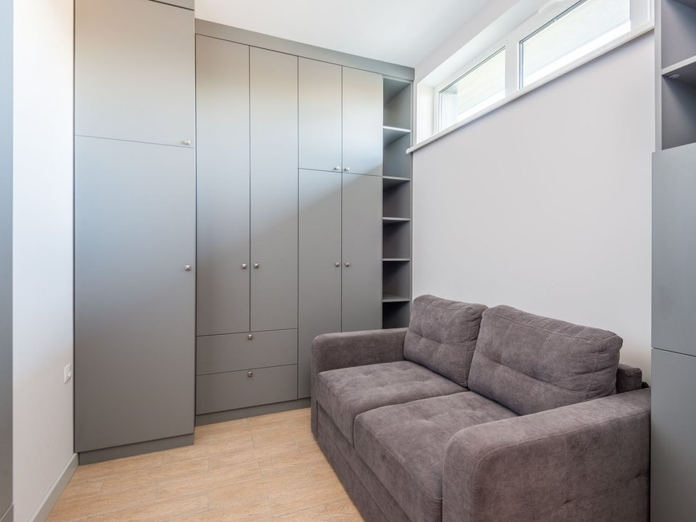

Creating Hidden Storage Spaces in Your Small Apartment

Photo: Max Vakhtbovych / Pexels
"Creating hidden storage" mostly means using unused spots to store things discreetly. Here are simple, safe ideas that do not alter the structure of your home.
1. Under the bed and sofa
Drawers or flat boxes under the bed can hold linens, shoes and blankets. Keep air flowing freely around radiators and heating vents.
2. Behind doors
A hanging organizer or hook rack uses wasted space. Check that the door still closes properly.
3. Up high
Shelves above doors or near the ceiling are good for light, rarely used items. Fasten them properly into the wall (see our guide on installing wall shelves).
4. Dual-purpose furniture
A storage ottoman, a bench with a chest, a bed with drawers or a coffee table with a compartment hides a lot without taking more room.
5. In corners and gaps
Corner shelves or narrow rolling cabinets use corners. Do not block access to the electrical panel, meter, furnace, water heater, exits or smoke detectors.
What not to do
- Drill into or open walls or floors without your landlord's permission and without checking for wires and pipes.
- Hide items against a heat source or in a space with no ventilation.
- Store flammable products, gasoline, propane tanks or chemicals in your home.
Keep the system simple
Label containers and note what they hold. Hidden storage is only useful if you can easily find what you put there.
With these ideas, a small apartment feels more open without any risk to safety.
Recommended products
As an Amazon Associate, I earn from qualifying purchases.